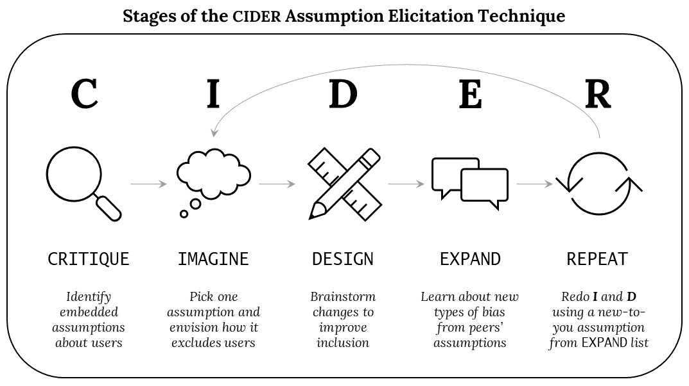

Hi! I'm a second year PhD student in the Information School at the University of Washington, advised by Dr. Katie Davis at the Digital Youth Lab. I am also currently a Graduate Fellow at the Philosophy Learning and Teaching Orginazation (PLATO) at UW.
My research looks at the impact of digital design as it relates to youth wellbeing in educational settings (formal and otherwise). I particularly focus on engaging children to develop strategies, methods, tools and perspectives to support the development of a critical and ethical sensitivity when it comes to technological systems. Of my current favorite methods is examining technology with children through philosophical praxis, which I contend can be an excellent avenue for collaborative design practices with children's meaningul agency in mind.
Prior to attending UW, I was a student at Reichman University in the Milab, where I worked on creating tangible objects of play for children and adults in a meaningful and impactful manner. I also received a Masters in philosophy, science and digital culture from Tel Aviv University, while working in various learning specialist and marketing roles Salesforce, Google, etc.
I'm a PhD candidate in the Information School at the University of Washington, advised by Prof. Amy J. Ko in the Code & Cognition lab.
Quick links: My CV (updated December 2022) | Google Scholar | Medium Blog | Twitter
My research lies in the intersection of human-computer interaction (HCI), justice-centered computing education, and software interface design. I investigate how we can best teach computing students and software practitioners to create technology that supports all kinds of users, not just those from socially and culturally dominant groups. I work toward a future where everyone can authentically and effectively interact with and be represented by the technologies they use.
My dissertation work explores how to help computing think critically about the technology they create and design more inclusive user interfaces. I created a pedagogical design evaluation technique called CIDER (Critique, Imagine, Design, Expand, Repeat) to help post-secondary HCI students learn to recognize and respond to implicit assumptions about users embedded in technology designs. A mixed-method case study evaluating CIDER’s efficacy in a post-secondary introductory interface design course found that the technique helped significantly increase students’ self-efficacy for inclusive interface design, expand students' concrete understandings of design biases, and even had long-lasting impacts on students' design approaches (read more here). In the 2022-23 academic year, I will be working with educators to evaluate CIDER in a variety of learning contexts.
Prior to attending UW, I was a student at Oregon State University advised by Prof. Margaret Burnett, researching gender-inclusive software design as part of the GenderMag project. I founded the GenderMag-Teach effort to understand the pedagogical content knowledge that university-level educators develop as they teach their students the principles of inclusive software design.
I am a National Science Foundation (NSF) Graduate Research Fellow and formerly an Adobe Research Women-in-Technology scholar.